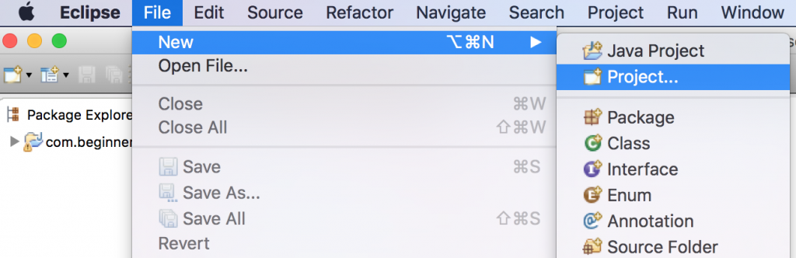
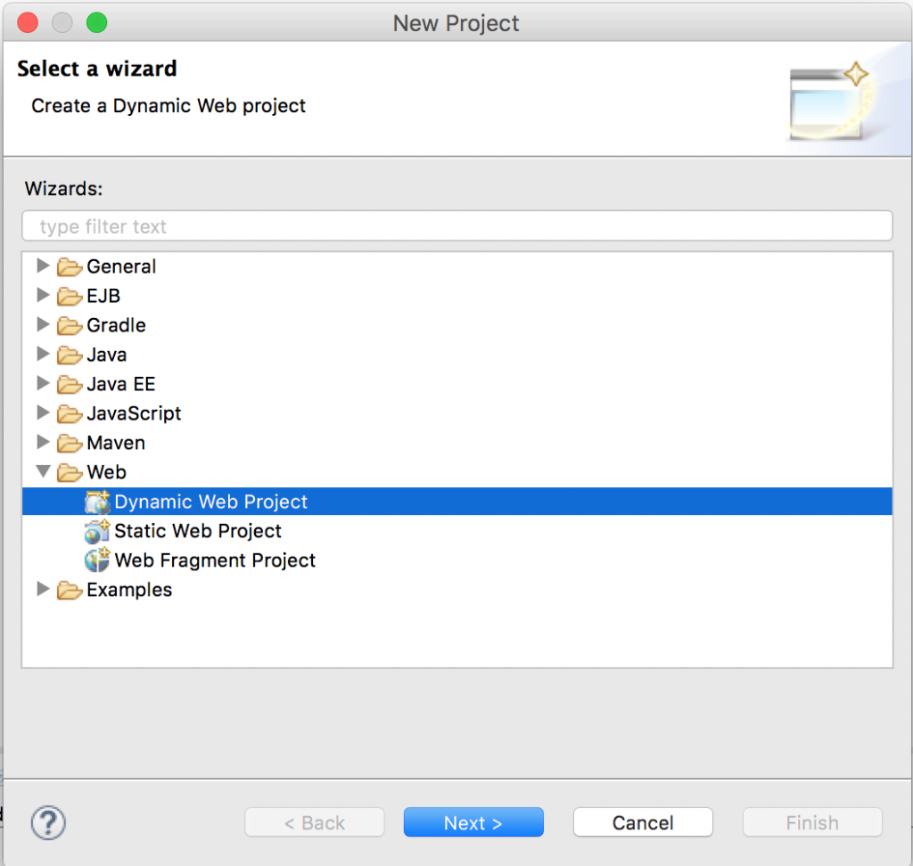
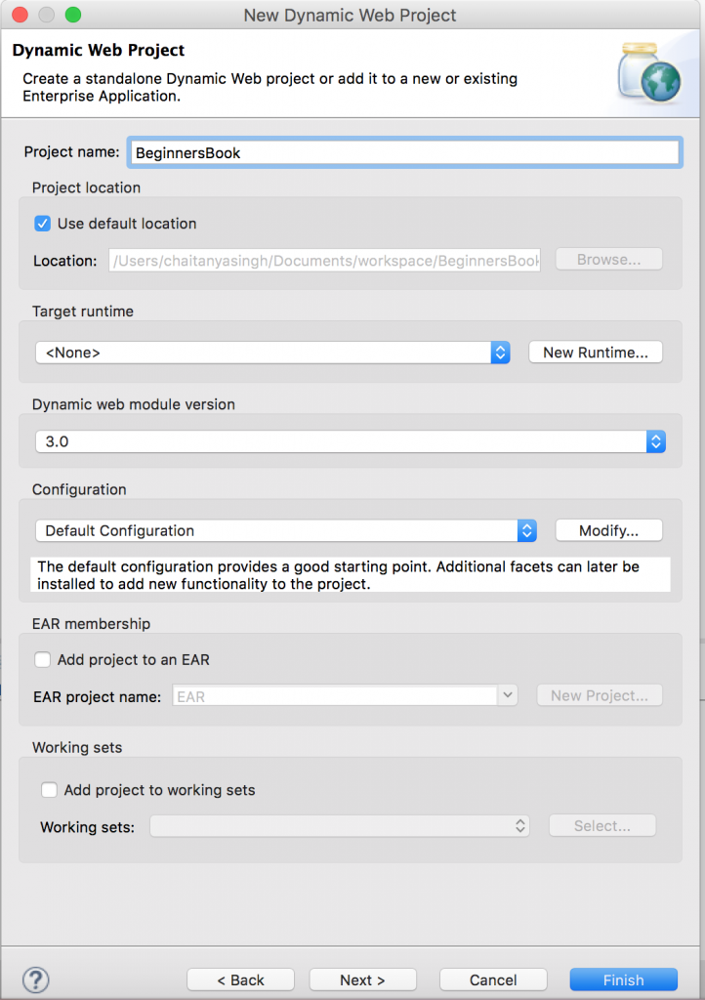
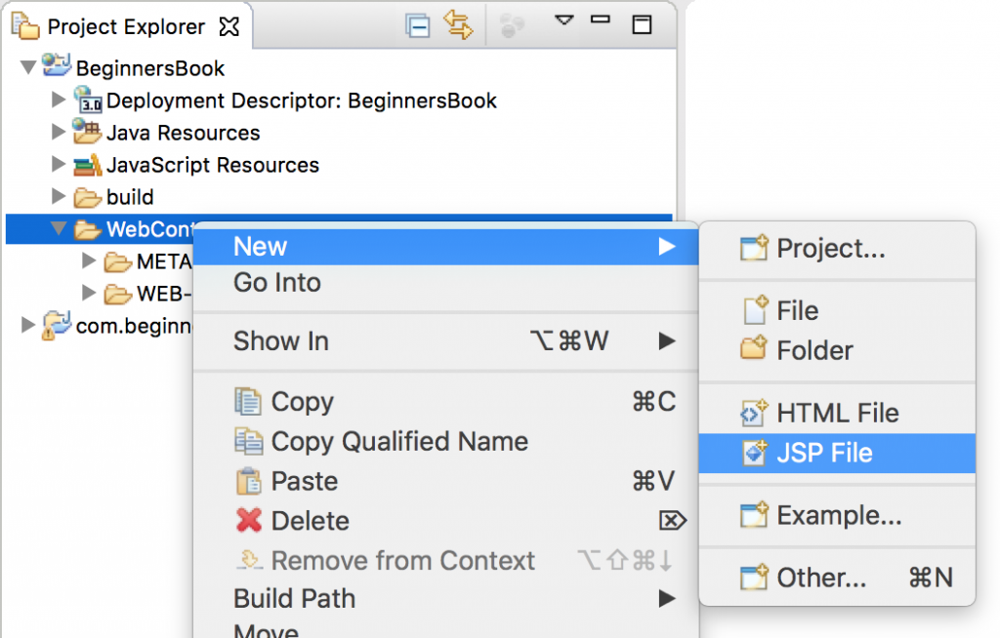
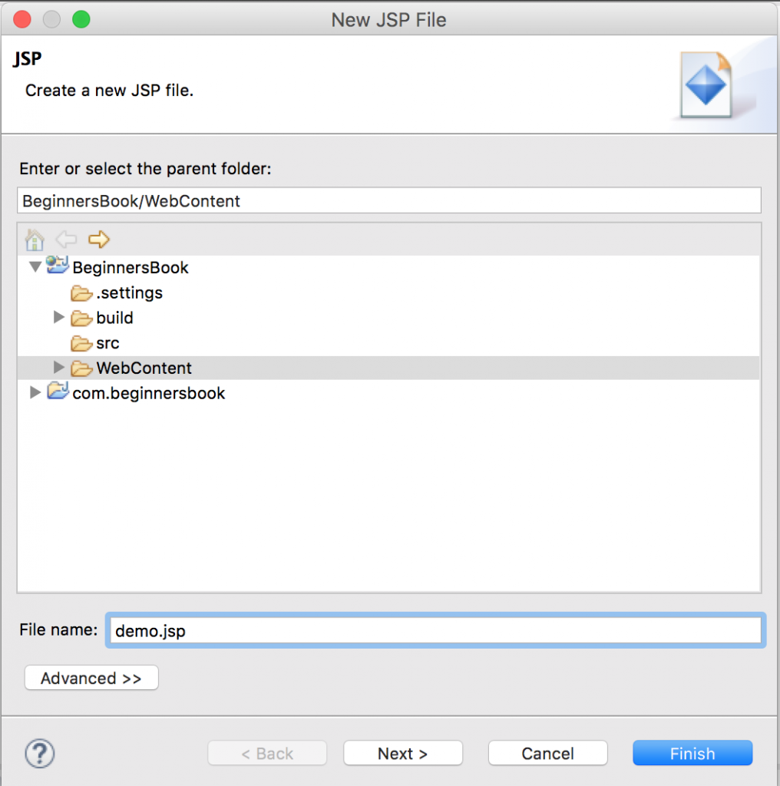
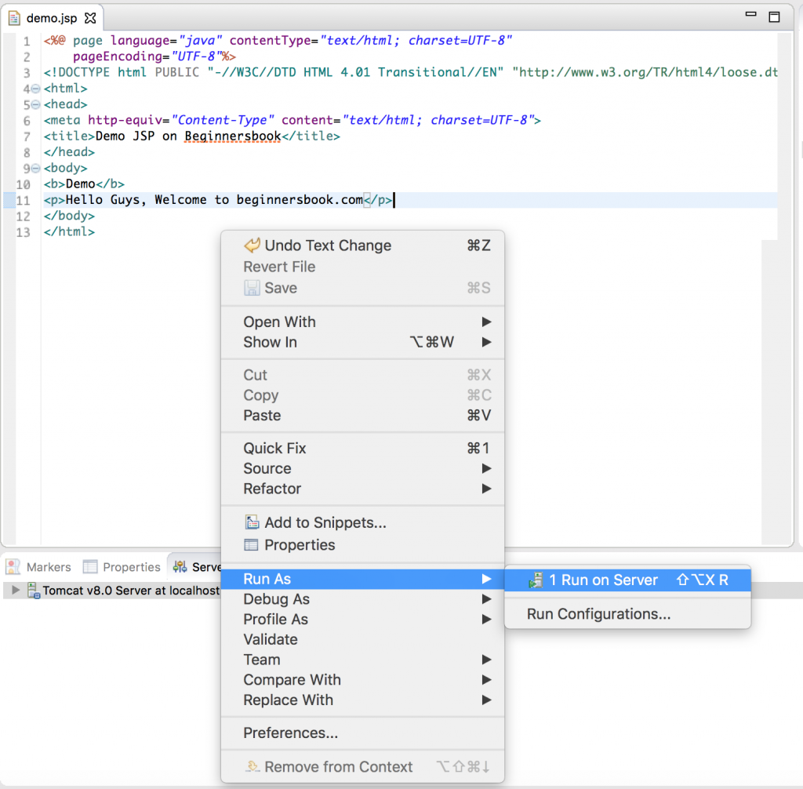
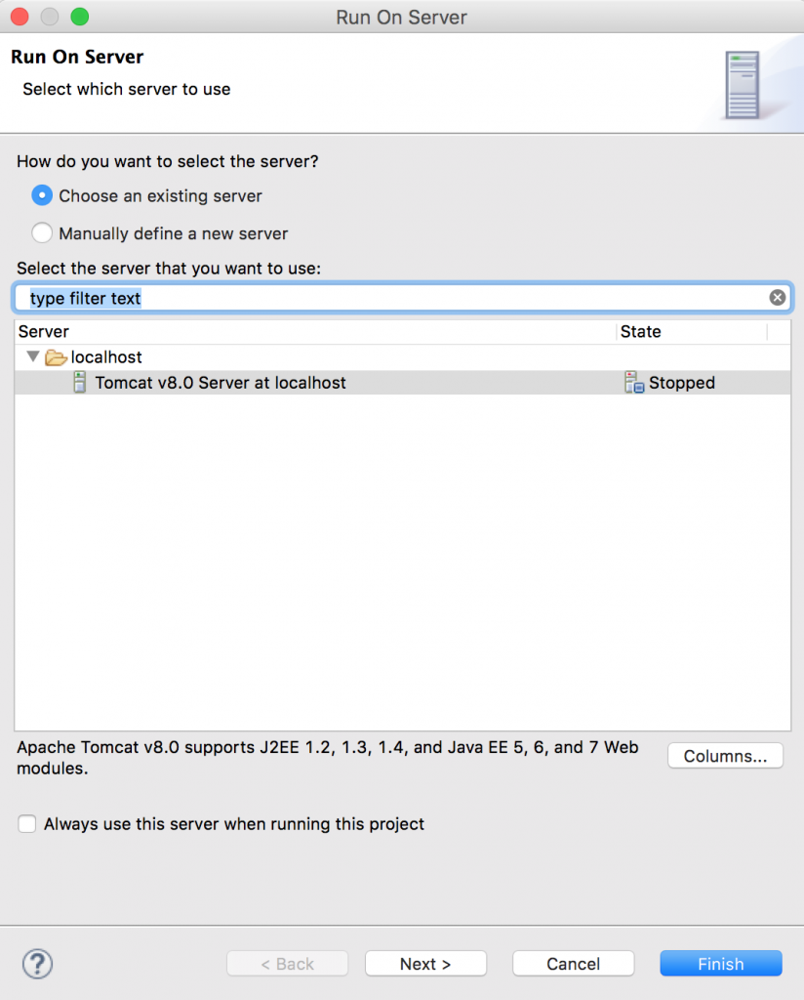
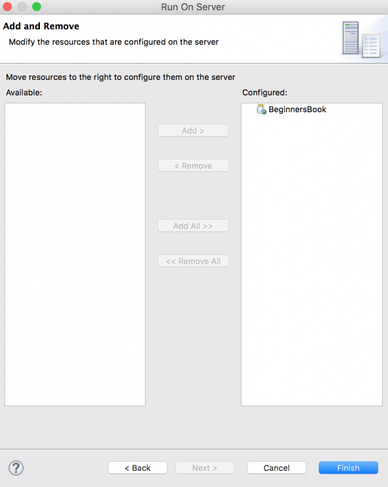
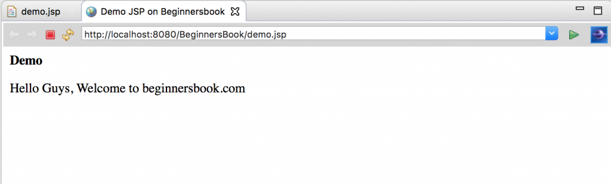

In this tutorial, we will create a simple JSP file and run it on Eclipse IDE using Apache Tomcat Server.
Step 1: In order to run JSP in Eclipse IDE, you need to have Apache tomcat Server configured in Eclipse IDE.
If you don’t have it then refer this tutorial: How to download and configure Apache Tomcat Server in Eclipse IDE.
Step 2: Open Eclipse and then click File ❯ New ❯ Click Project

Click on Dynamic Web Project located under Web.
If you do not see dynamic web project option in Eclipse then refer this tutorial: How to fix “Dynamic Web project” missing in Eclipse issue

Give a Project name and click Finish.

Step 3: Create a JSP file. Right click on the WebContent ❯ New ❯ Click on JSP File

Enter file name and click Finish.

Step 4: Write some JSP code.
If you get this warning “The superclass “javax.servlet.http.HttpServlet” was not found on the Java Build Path” then refer this tutorial: How to fix javax.servlet.http.HttpServlet was not found error in Eclipse.
Step 5: Run the JSP project. Right click on your JSP project ❯ Run as ❯ Click on “Run on Server”.

Select the Server and click next.

Click on Add All ❯ Click Finish

You will see the output of your JSP page in the next window. If you want you can copy the url and paste it in your browser, you will see the same output.

Leave a Reply